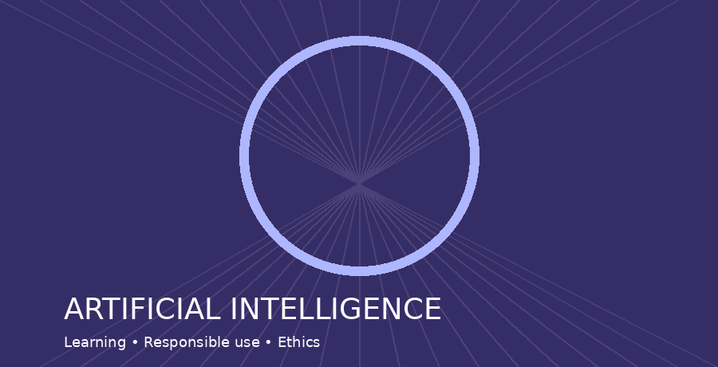

MIS & AI EthicsWebsite OverviewReena VollalaOctober 18, 2026Correct AI Usage My ReasoningAI can be helpful in college when students use it to clarify difficult concepts and practice new skills. It can provide examples, explain confusing material, and suggest improvements to writing. Students should check the information it produces and follow their instructors’ rules about acceptable assistance. The final work should show what the student understands rather than simply copying an AI response. AI Critique of the DraftI agree with your point that AI should help students learn rather than replace their effort. Your examples of explanations and writing suggestions are practical, and mentioning course rules makes your argument stronger. One area to improve is specificity: you could explain how a student might use AI to practice SQL without copying a completed homework answer. I would also add a reminder to disclose AI assistance and protect private information when using these tools. Benefits of AI
Who Benefits?
How AI Tools Used
Read my AI ethics Word document for two example discussions of ethical AI use. Open the same material as an AI ethics PDF document. Incorrect AI Usage
I believe AI is useful for learning, but honesty matters more than convenience. Students should verify AI-generated claims before using them. Presenting generated answers as original work can violate academic policies. Responsible use requires transparency and personal judgment. |